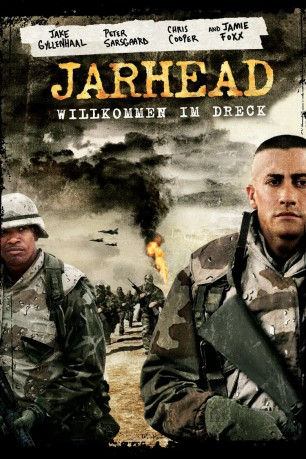

#887 Jarhead - Willkommen im Dreck
 
 IMDB-Wertung: 7.0 / 10
IMDB-Wertung: 7.0 / 10  Metascore: 58
Metascore: 58 
Irak 1991: Die US-Marines wühlen sich durch den heißen Wüstensand – immer dem Feind entgegen. Mittendrin Sergeant Sykes, Anführer eines Marine-Platoons, und dessen Scharfschütze Swoof, soeben aus dem Ausbildungscamp entlassen. Bewaffnet mir einem Präzisionsgewehr, behangen mit einem Fünzig-Kilo-Rucksack, ziehen sie ins Ungewisse. Schutzlos der erbarmungslosen Hitze und den irakischen Soldaten ausgeliefert, können sie ihre Tage nur mit schwarzem Humor und einer deftigen Prise Sarkasmus ertragen. Sie kömpfen in einem Land, das sie nicht kennen, gegen einen Feind, den sie nicht sehen, in einem Krieg, den sie nicht verstehen. Was wird der nächste Tag bringen?
Jahr: 2005
Dauer: 125 Minuten
FSK: 12
Land: Deutschland Studio: UIPTonspuren: DD5.1 - ,
Untertitel:
Auflösung: 1080p (1920x816) Größe: 10649 MB
Genre: Biographie, Drama, Krieg
Regisseur:  Sam Mendes
Sam Mendes
Drehbuch: William Broyles Jr., Anthony Swofford
Soundtrack: Thomas Newman
Darsteller:
 Jake Gyllenhaal als Anthony Swofford
Jake Gyllenhaal als Anthony Swofford- Scott MacDonald als D.I. Fitch
 Peter Sarsgaard als Alan Troy
Peter Sarsgaard als Alan Troy Jamie Foxx als Staff Sgt. Sykes
Jamie Foxx als Staff Sgt. Sykes Ming Lo als Bored Gunny
Ming Lo als Bored Gunny- Lucas Black als Chris Kruger
- Kevin Foster als Branded Marine
- Brian Geraghty als Fergus O'Donnell
 Damion Poitier als Poitier
Damion Poitier als Poitier- Katherine Randolph als Young Mrs. Swofford
- Rini Bell als Swoff's Sister
- Dendrie Taylor als Mrs. Swofford
- James Morrison als Mr. Swofford
- Brianne Davis als Swoff's Girlfriend Kristina
- Tyler Sedustine als Harris
 Jacob Vargas als Juan Cortez
Jacob Vargas als Juan Cortez Laz Alonso als Ramon Escobar
Laz Alonso als Ramon Escobar- Jocko Sims als Julius
- Kristin Richardson als Stewardess
- Iván Fenyö als Pinko
 Tyler Jon Olson als Recon Marine
Tyler Jon Olson als Recon Marine- Peter Gail als Doc John
- Jamie Martz als Foster
- Evan Jones als Dave Fowler
- Kareem J. Grimes als Welty
- Chris Cooper als Lt. Col. Kazinski
 Dennis Haysbert als Major Lincoln
Dennis Haysbert als Major Lincoln- Martin Papazian als Brian Dettman
- Becky Boxer als Dettman's Wife
- Mark Davis als Dettman's Neighbor
 John Krasinski als Corporal Harrigan
John Krasinski als Corporal Harrigan- Christian Reeve als Bedouin
- Mike Akrawi als Bedouin
- Kurt Larson als Arguing Corporal
- Ammar Daraiseh als Iraqi Officer
- Nasser Faris als Iraqi Officer
 V.J. Foster als Vietnam Vet
V.J. Foster als Vietnam Vet- Steve Nguyen als Recruit , credit only
- Jimilee Allen als Marine , uncredited
- Michael Broderick als STA Marine , uncredited
- Byron Browne als Bootcamp Marine D. Giloolly , uncredited
- Devin Corey als Solider on phone , uncredited
- Matt Duggan als Tower Guard , uncredited
- Blake Ellis als Marine , uncredited
- Jon Erik als Recruit #1 , uncredited
- Cantrell Harris als STA Marine , uncredited
- Patricia Lauriet als Other Stewardess , uncredited
- Raul Limon als Marine , uncredited
- Brian Mahoney als Priest , uncredited
- Justin Marchert als Marine , uncredited
Datei: X:\3-Trilogie(G-M)\Jarhead\Jarhead - Willkommen im Dreck (2005, FSK12, 1920x816).mkv seit 13.04.2015
Festplatte: HD Collection-2(A-Z)-3(A-M)
 Alle Filme aus Gruppe '3-Trilogie(G-M)\Jarhead'
Alle Filme aus Gruppe '3-Trilogie(G-M)\Jarhead'